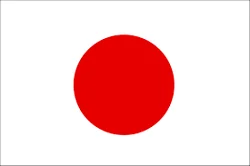

Japon
Sus orígenes se remontan al emperador Go-Toba. Considerado como insignia del shogunato durante el periodo Edo, era utilizado habitualmente como objeto decorativo en múltiples soportes. Durante el periodo Meiji se restringió el uso del Sello Imperial estrictamente al Emperador de Japón, el cual usaba un crisantemo de 16 pétalos con dieciséis puntas de una segunda fila de pétalos entrelazándose con los de la primera.